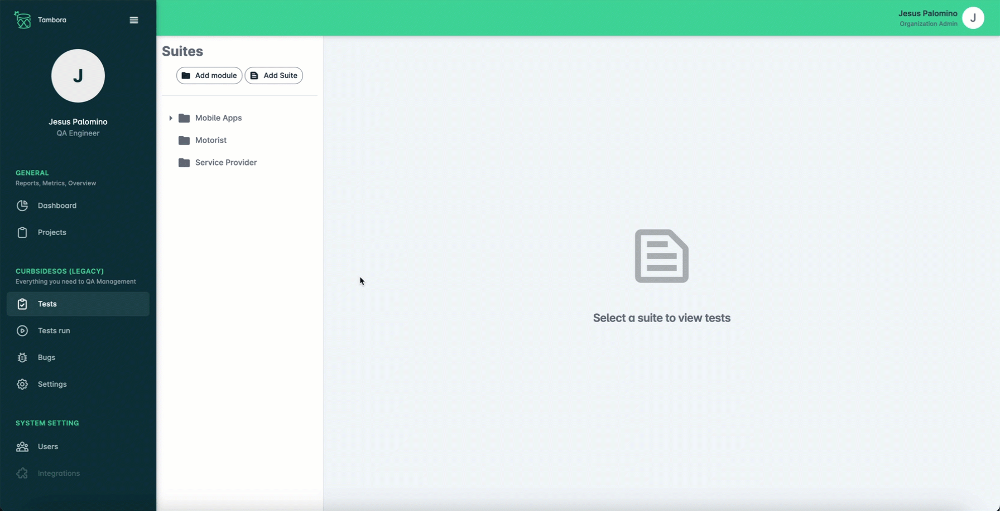
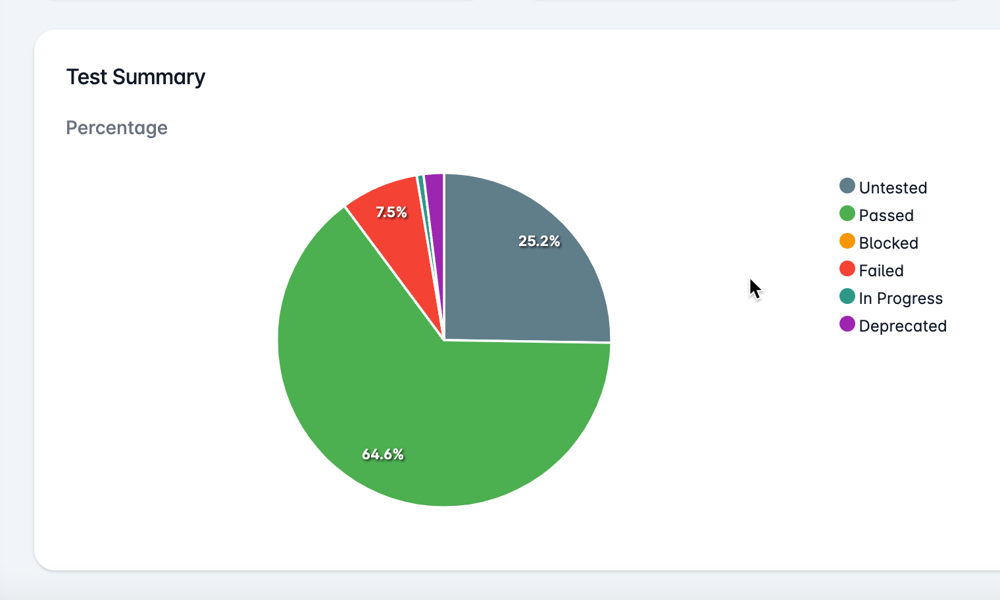

Version 1.2.0
These changes in Version 1.2.0 enhance the organization, functionality, and accuracy
of the testing process, resulting in a more efficient and user-friendly experience.
Enhanced Module Creation
Added the capability to create modules and suites individually, giving you greater
flexibility in managing your testing environment.

Introduced Suite Grouping
Organize your suites into convenient modules and sub-modules. You can now create,
update, and delete modules or suites independently, allowing for more structured testing.
Automated Counter Functionality
Implemented an automated counter, providing real-time tracking of test progress and
making it easier to monitor testing activities.

Streamlined Sign-In
Eliminated the recurring alert message that used to appear during sign-in, improving
the user experience and workflow.
Accurate Dashboard Data
Addressed a dashboard issue, ensuring that the displayed test status percentage
accurately reflects the current testing outcomes.
